File: 000840.gt.txt (if the image is defective, simply delete all Arabic text and the line will be excluded)
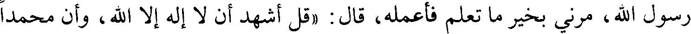
رسول الله، مرني بخير ما تعلم فأعمله، قال : «قل أشهد أن لا إله إلا الله، وأن محمدا
File: 000841.gt.txt (if the image is defective, simply delete all Arabic text and the line will be excluded)
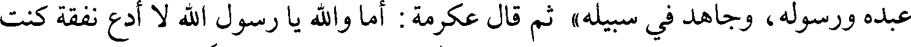
عبده ورسوله، وجاهد في سبيله» ثم قال عكرمة : أما والله يا رسول الله لا أدع نفقة كنت
File: 000842.gt.txt (if the image is defective, simply delete all Arabic text and the line will be excluded)
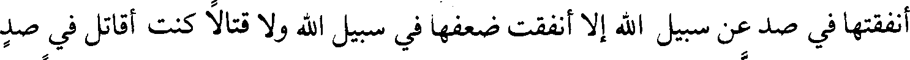
أنفقتها في صد عن سبيل الله إلا أنفقت ضعفها في سبيل الله ولا قتالا كنت أقاتل في صد
File: 000843.gt.txt (if the image is defective, simply delete all Arabic text and the line will be excluded)
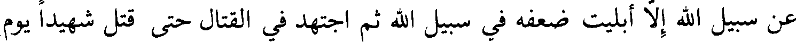
عن سبيل الله إلا أبليت ضعفه في سبيل الله ثم اجتهد في القتال حتى قتل شهيدا يوم
File: 000844.gt.txt (if the image is defective, simply delete all Arabic text and the line will be excluded)
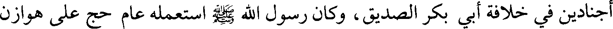
أجنادين في خلافة أبي بكر الصديق، وكان رسول الله صلعم استعمله عام حج على هوازن
File: 000845.gt.txt (if the image is defective, simply delete all Arabic text and the line will be excluded)
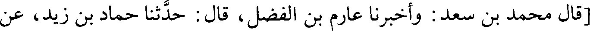
[قال محمد بن سعد : وأخبرنا عارم بن الفضل، قال : حدثنا حماد بن زيد، عن
File: 000846.gt.txt (if the image is defective, simply delete all Arabic text and the line will be excluded)
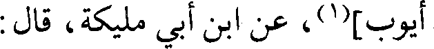
أيوب](1)، عن ابن أبي مليكة، قال :
File: 000847.gt.txt (if the image is defective, simply delete all Arabic text and the line will be excluded)
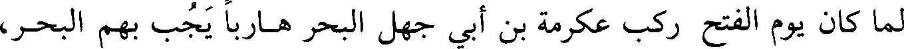
لما كان يوم الفتح ركب عكرمة بن أبي جهل البحر هاربا يجب بهم البحر،
File: 000848.gt.txt (if the image is defective, simply delete all Arabic text and the line will be excluded)
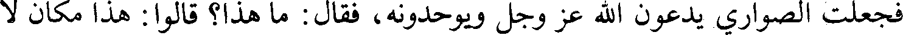
فجعلت الصواري يدعون الله عز وجل ويوحدونه، فقال : ما هذا؟ قالوا : هذا مكان لا
File: 000849.gt.txt (if the image is defective, simply delete all Arabic text and the line will be excluded)
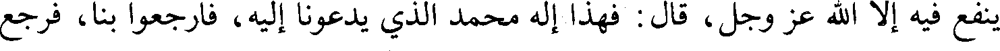
ينفع فيه إلا الله عز وجل، قال : فهذا إله محمد الذي يدعونا إليه، فارجعوا بنا، فرجع
File: 000850.gt.txt (if the image is defective, simply delete all Arabic text and the line will be excluded)
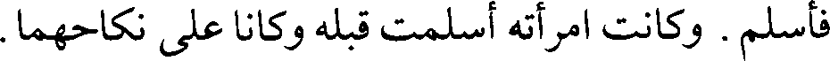
فأسلم. وكانت امرأته أسلمت قبله وكانا على نكاحهما.
File: 000851.gt.txt (if the image is defective, simply delete all Arabic text and the line will be excluded)
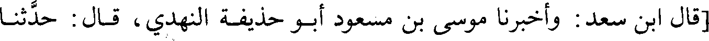
[قال ابن سعد : وأخبرنا موسى بن مسعود أبو حذيفة النهدي، قال : حدثنا
File: 000852.gt.txt (if the image is defective, simply delete all Arabic text and the line will be excluded)
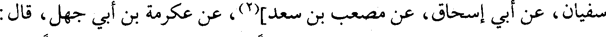
سفيان، عن أبي إسحاق، عن مصعب بن سعد][2]، عن عكرمة بن أبي جهل، قال :
File: 000853.gt.txt (if the image is defective, simply delete all Arabic text and the line will be excluded)
قال لي النبي صلعم يوم جئته : «مرحبا بالراكب المهاجر، مرحبا بالراكب
File: 000854.gt.txt (if the image is defective, simply delete all Arabic text and the line will be excluded)
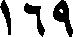
169
File: 000855.gt.txt (if the image is defective, simply delete all Arabic text and the line will be excluded)
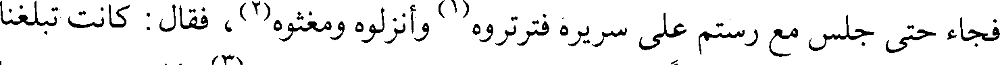
فجاء حتى جلس مع رستم على سريره فترتروه(1) وأنزلوه ومغثوه(2)، فقال : كانت تبلغنا
File: 000856.gt.txt (if the image is defective, simply delete all Arabic text and the line will be excluded)
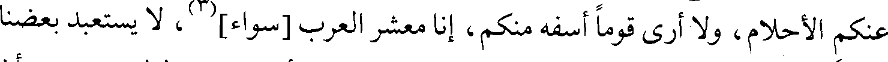
عنكم الأحلام، ولا أرى قوما أسفه منكم، إنا معشر العرب [سواء](3)، لا يستعبد بعضنا
File: 000857.gt.txt (if the image is defective, simply delete all Arabic text and the line will be excluded)
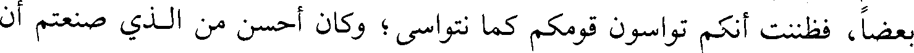
بعضا، فظننت أنكم تواسون قومكم كما نتواسى؛ وكان أحسن من الذي صنعتم أن
File: 000858.gt.txt (if the image is defective, simply delete all Arabic text and the line will be excluded)
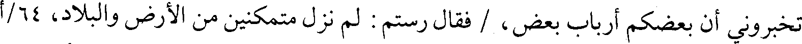
تخبروني أن بعضكم أرباب بعض، / فقال رستم : لم نزل متمكنين من الأرض والبلاد، 64/أ
File: 000859.gt.txt (if the image is defective, simply delete all Arabic text and the line will be excluded)
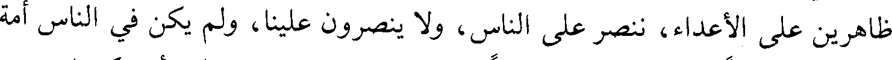
ظاهرين على الأعداء، ننصر على الناس، ولا ينصرون علينا، ولم يكن في الناس أمة
File: 000860.gt.txt (if the image is defective, simply delete all Arabic text and the line will be excluded)
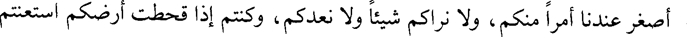
أصغر عندنا أمرا منكم، ولا نراكم شيئا ولا نعدكم، وكنتم إذا قحطت أرضكم استعنتم
File: 000861.gt.txt (if the image is defective, simply delete all Arabic text and the line will be excluded)
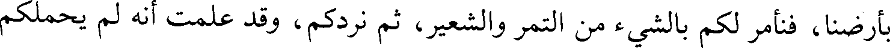
بأرضنا، فنأمر لكم بالشيء من التمر والشعير، ثم نردكم، وقد علمت أنه لم يحملكم
File: 000862.gt.txt (if the image is defective, simply delete all Arabic text and the line will be excluded)
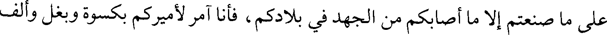
على ما صنعتم إلا ما أصابكم من الجهد في بلادكم، فأنا آمر لأميركم بكسوة وبغل وألف
File: 000863.gt.txt (if the image is defective, simply delete all Arabic text and the line will be excluded)
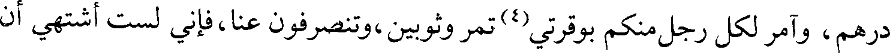
درهم، وآمر لكل رجل منكم بوقرتي(4) تمر وثوبين، وتنصرفون عنا، فإني لست أشتهي أن
File: 000864.gt.txt (if the image is defective, simply delete all Arabic text and the line will be excluded)
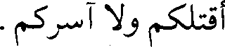
أقتلكم ولاآسركم.
File: 000865.gt.txt (if the image is defective, simply delete all Arabic text and the line will be excluded)
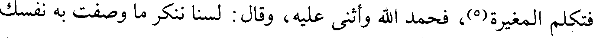
فتكلم المغيرة(5)، فحمد الله وأثنى عليه، وقال : لسنا ننكر ما وصفت به نفسك
File: 000866.gt.txt (if the image is defective, simply delete all Arabic text and the line will be excluded)
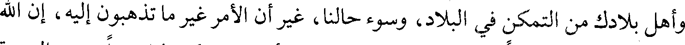
وأهل بلادك من التمكن في البلاد، وسوء حالنا، غير أن الأمر غير ما تذهبون إليه، إن الله
File: 000867.gt.txt (if the image is defective, simply delete all Arabic text and the line will be excluded)
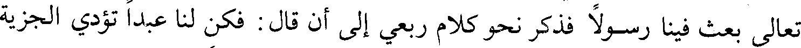
تعالى بعث فينا رسولا فذكر نحو كلام ربعي إلى أن قال : فكن لنا عبدا تؤدي الجزية
File: 000868.gt.txt (if the image is defective, simply delete all Arabic text and the line will be excluded)
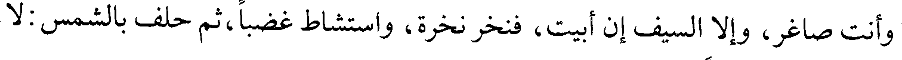
وأنت صاغر، وإلا السيف إن أبيت، فنخر نخرة، واستشاط غضبا، ثم حلف بالشمس : لا
File: 000869.gt.txt (if the image is defective, simply delete all Arabic text and the line will be excluded)
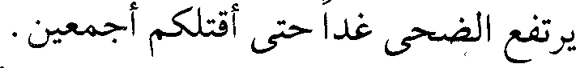
يرتفع الضحى غدا حتى أقتلكم أجمعين.
To Save: `Ctrl+s`, make sure to choose `Webpage, complete`!